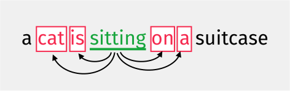
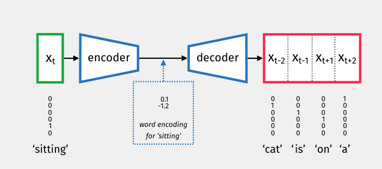
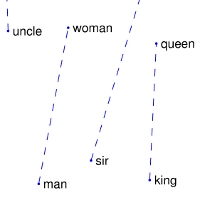
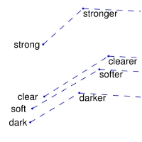
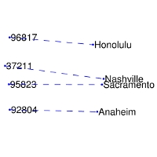

Appendix F — Word Embedding
At the core of neural networks is the use of linear algebra to combine feature vectors. Using neural networks for text processing is therefore problematic, as text is a sequence of words and symbols rather than a vector of real numbers.
In this note, we will look at how text can be represented with real-valued word vectors. This transformation is a key step in using machine learning for natural language processing (NLP) and is called encoding or embedding.
The aim of an emdedding is to design a lookup table, where each word can be mapped to a vector.
F.1 One-Hot Encoding
The simplest embedding is the one-hot vector. Each symbol in a dictionary of size n is represented as a vector where all elements are zero, except for a single entry of one at the index corresponding to that word.
Example F.1 (One-Hot Encoding) Consider the following alphabetically sorted dictionary: {a, cat, is, sitting}. The dictionary size is 4, so the word vector sizes are 4 \times 1. The one-hot encodings for cat and sitting could be as follows:
\mathbf{x}_{\mathtt{cat}} = \begin{bmatrix} 0 \\ 1 \\ 0 \\ 0 \end{bmatrix}\,, \quad
\mathbf{x}_{\mathtt{sitting}} = \begin{bmatrix} 0 \\ 0 \\ 0 \\ 1 \end{bmatrix}
The problem with one-hot word vectors is the sheer scale of languages. There are about 200,000 words in current use in the English language, which altogether create about 13 million different tokens. Word vectors generated by one-hot encoding would be embedded in a vector space of dimension 13 million!
In neural networks, this would require input vectors of dimension 13 million and thus would necessitate training an enormous number of weights. We therefore need to find a more compact representation.
Another issue is that one-hot encoding does not capture any semantic relationship between words.
Let’s look at the word vectors we have defined with one-hot. In theory we could add the word vectors as follows:
2 {\bf x}_{\mathtt{cat}} + 3.2 {\bf x}_{\mathtt{sitting}} - 1.5 {\bf x}_{\mathtt{is}}
but we will end up with vectors that are difficult to interpret. For instance, what would be the meaning of
2 {\bf x}_{\mathtt{cat}} + 3.2 {\bf x}_{\mathtt{sitting}} - 1.5 {\bf x}_{\mathtt{is}} = \begin{bmatrix} 0 \\ 2 \\ -1.5 \\ 3.2 \end{bmatrix} = {\bf x}_{?}
Also, by definition, for any two distinct dictionary entries \mathbf{x}_1 and \mathbf{x}_2, we have \mathbf{x}_1^{\top}\mathbf{x}_2 = 0. Consequently, their cosine similarity is always zero, regardless of whether the words are synonyms or entirely unrelated.
We require an encoding where words are represented by vectors that makes sense in an Euclidean space: where linear combinations of word vectors and scalar products make as much sense as possible.
F.2 Word2Vec
Word2Vec (2013) was the first neural embedding model to gain widespread popularity. While many non-deep learning techniques exist—such as GloVe (Global Vectors for Word Representation), which relies on matrix factorisation of co-occurrence statistics—Word2Vec introduced a powerful predictive approach.
Word2Vec offers two main architectures: Continuous Bag of Words (CBOW), which uses context to predict a target word, and Skip-gram, which predicts the context from a target word.
Let’s look at the Skip-gram approach, where we take a target word \mathbf{x}_t and attempt to predict its surrounding context words (e.g. \mathbf{x}_{t-2}, \mathbf{x}_{t-1}, \mathbf{x}_{t+1}, \mathbf{x}_{t+2}).

The model follows an encoder-decoder architecture. The input is a one-hot vector of size n, the encoder produces a compact embedding of size r, and the decoder attempts to reconstruct the context word probabilities.

Training this model is numerically challenging because the final softmax layer must handle millions of entries. Calculating the exponentials for such a large dictionary is computationally expensive, requiring specialised techniques such as hierarchical softmax or negative sampling.
F.3 Doing Maths with these Embeddings
Remarkably, these learnt embedding spaces often capture semantic relationships as linear substructures. This allows for algebraic manipulation of concepts (ie. linear combination). A famous example is the gender relationship:
\mathbf{x}_{\text{man}} - \mathbf{x}_{\text{woman}} \approx \mathbf{x}_{\text{king}} - \mathbf{x}_{\text{queen}}
Some representations from these linear substructures for GloVe are shown in Figure F.1. Similar examples can be found with Word2Vec.



Another remarkable result is that these embeddings are effective at capturing semantic similarities (ie. scalar product). For example, the nearest neighbours to the word “frog” in the GloVe embedding space include other amphibian species like “toad” or “litoria” (see Figure F.2).
F.4 Tokenisation: Beyond Word-Level Embeddings
While word-level embeddings like Word2Vec and GloVe show that text can be meaningfully mapped into a Euclidean space, they suffer from several significant limitations:
- Out-of-Dictionary (OOD) Problem: If a model encounters a word that was not in its training vocabulary (e.g. a typo, a new technical term, or a rare name), it cannot generate a vector for it.
- Morphology: They treat different forms of the same root word (e.g. “walk”, “walking”, “walked”) as entirely distinct entities, failing to exploit their shared meaning efficiently.
Modern Large Language Models (LLMs) solve these issues by using tokenisation instead of simple word-level encoding. Techniques such as Byte-Pair Encoding (BPE) or WordPiece breakdown words into frequent groups of bytes or sub-word units.
In this approach, common words might remain as single tokens, but rare words are decomposed into smaller, more frequent sub-units. For example, the word “unhappily” might be broken down into un + happi + ly.
This offers a bridge between character-level and word-level encoding:
- Like character-level encoding, it can represent any arbitrary string by breaking it down into its constituent parts (even down to individual bytes), thus eliminating the out-of-dictionary problem.
- Like word-level encoding, it retains semantic meaning in its tokens, as frequent sub-words (like prefixes and suffixes) carry consistent information across different contexts.
F.5 Further Reading
For those wishing to explore word embeddings and tokenisation in more detail, you can look at the following resources:
- Efficient Estimation of Word Representations in Vector Space, T. Mikolov, K. Chen, G. Corrado, and J. Dean (2013).
- GloVe: Global Vectors for Word Representation, J. Pennington, R. Socher, and C. Manning (2014).
- Neural Machine Translation of Rare Words with Subword Units, R. Sennrich, B. Haddow, and A. Birch (2015) — the foundational paper for BPE in NLP.